Android app new
My Phone for Android: a free, open-source app that puts My Phone in your pocket. Texts, calls, voicemail and settings, with notifications, calls in and out from the app itself, and a PIN lock. Pair it once and it stays connected for weeks.
It works day to day, but it's new: keep the web My Phone handy. It needs own-pbx up to date — run pbx-update after each app update. Calls now work both ways: the app places calls and rings for incoming ones, alongside your desk phone or Zoiper.
Screenshots

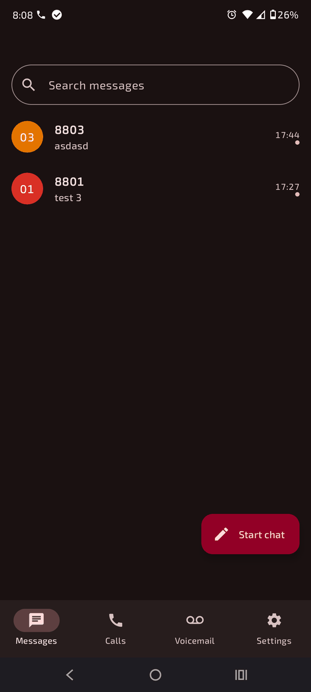

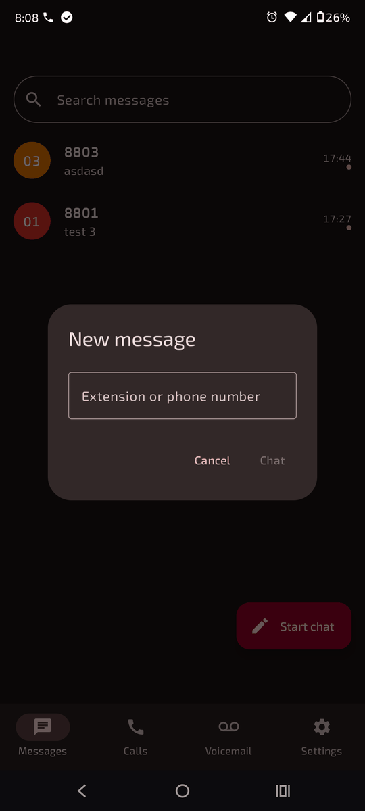

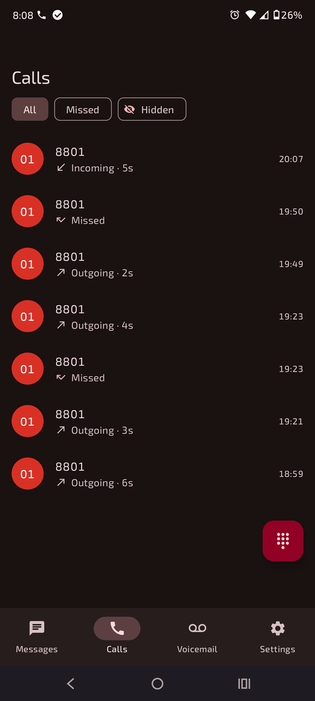

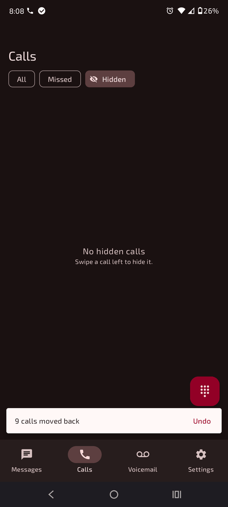

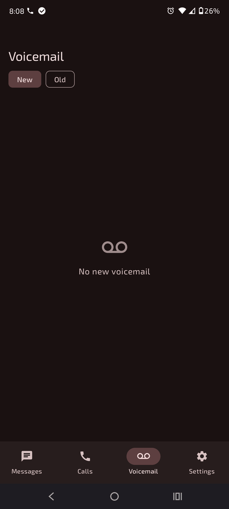

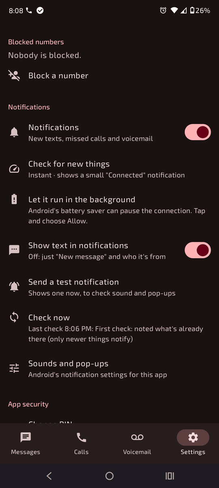

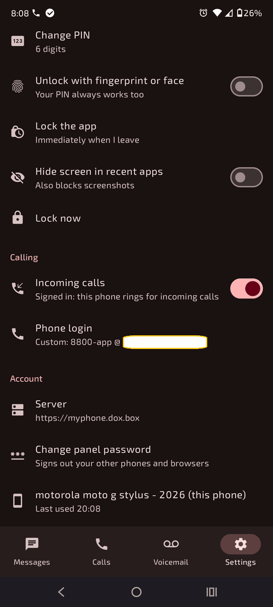

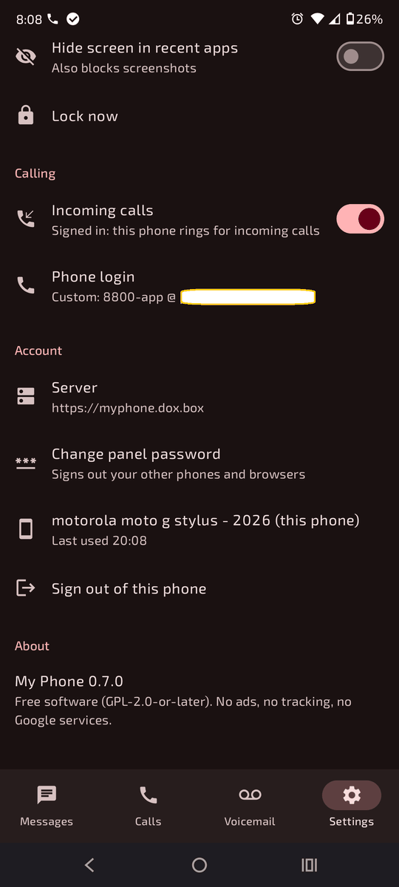

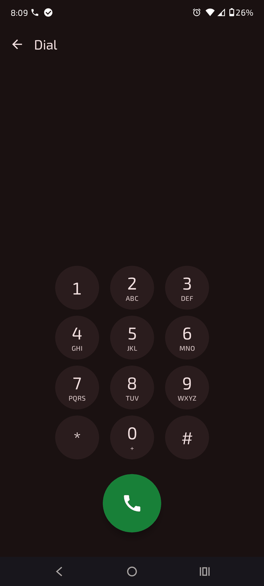

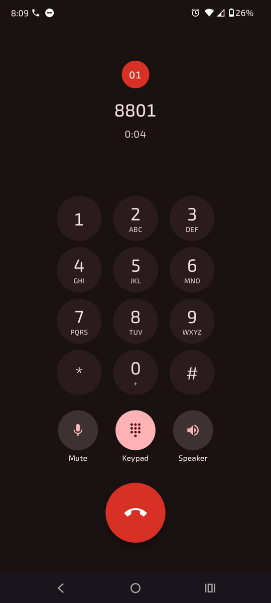

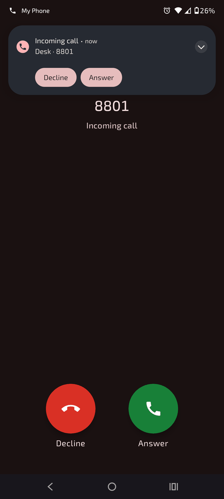

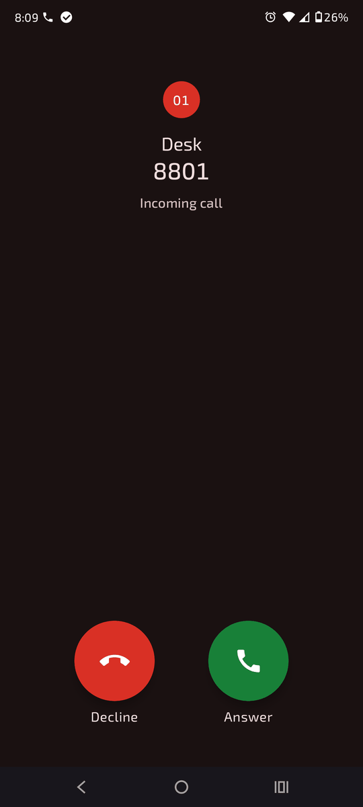
Screenshots from 0.7.0. Tap one to see it full size.
What it does
| Screen | What you can do |
|---|---|
| Messages | Inbox like Google Messages: search, unread dots, swipe to delete with Undo, long-press to select several (Select all, Delete), Start chat to any extension or number, chat bubbles, copy, block, and a Call button in a chat. |
| Calls | All / Missed / Hidden. Swipe left or long-press to hide calls (with Undo); hidden calls wait under Hidden until the PBX removes them after 90 days — nothing is deleted. Tap a call to Call, text back, hide or block. The dial pad button places a call. Opening Calls clears the missed-call badge. |
| Voicemail | New / Old. Tap to play, with a seek bar, elapsed/total time and 1x / 1.5x / 2x speed. Then Call back, Text, Move to Old / New, Block or Delete (swipe or multi-select, with Undo). |
| Settings | Do Not Disturb, call forwarding, ring time, record my calls, receive/send texts, text emails, notification email, blocked numbers; Notifications; Calling (incoming calls, phone login); PIN, fingerprint, lock timer, screenshot blocking; panel password, signed-in phones, sign out. |
Everything you change in the app goes through the same rules as the web My Phone: your plan limits, the admin's safety lock, block lists and rate limits all apply the same way.
Get the app
- On GitHub open Actions → Android app, pick the latest green run and download my-phone-debug-apk under Artifacts.
- Unzip it and open the
.apkon your phone. Android asks to allow installing from your browser or file manager — allow it once. Later versions install over the top.
Free software (GPL-2.0-or-later; the built-in phone engine, Linphone, is GPL-3.0), no ads, no tracking, no Google Play Services or Firebase. Needs Android 8.0 or newer.
Connecting the app
The app connects with a pairing code — it never asks for your My Phone password.
- In a browser, sign in to My Phone and open App → Get a pairing code.
- In the app, tap Scan QR code and point the phone at the QR on your screen. It fills in the server and code and connects.
Other ways, same result:
- Phone's own camera: scan the QR; it opens the app with everything filled in — tap Connect.
- Page open on the phone itself: tap Open in the My Phone app on that page.
- Type it: tap the code and server on the web page to copy them, and enter them under or type it.
Server: https://myphone.example.com
Pairing code: K7QH2MXP (example; works once, for 5 minutes)The server is your My Phone address from outside (for example published through Cloudflare Tunnel), or http://<PBX-IP>:8001 at home. An http:// address isn't encrypted; the app warns you — only use it on your home network or a VPN.
Each phone's sign-in lasts 60 days after you last used the app — use it weekly and you never pair again. Changing your panel password signs out all your other phones. You can sign out any phone from My Phone → App or from the app's Settings.
Calls
The app has a built-in phone, so it makes and takes calls itself — no Zoiper needed.
- In the app: Settings → Calling → Phone login → Get from my PBX, check the details, tap Save.
- Use the dial pad on Calls, or Call on a call, a voicemail or in a chat. Allow the microphone the first time.
Instead of Get from my PBX you can scan the phone login QR (web: My Phone → App → Show phone login QR; the password stays hidden until you ask), or type the server, username and password like in Zoiper.
- During a call: mute, keypad (for menus like
*97voicemail), speaker, hang up. Leave the app and an On a call notification keeps it going, with a Hang up button. - If a call fails, the screen says why with a SIP code; Copy details copies it for whoever looks after the PBX.
- How it connects: like a remote Zoiper — TLS to the edge on port 5061, encrypted audio (SRTP), with your extension's login.
- Needs the remote-access domain set under Admin → Network (the one Zoiper uses away from the office).
Incoming calls
Settings → Calling → Incoming calls (on by default). Your extension then rings the app at the same time as your desk phone and Zoiper — whichever answers first takes the call, the others stop.
- Ringing: a full-screen call screen, even over the lock screen, with Answer and Decline. If the phone is in use you get a pop-up notification with the same buttons.
- Its own line: the app signs in as
<extension>-app(for example8800-app) with the same password, so it never knocks your desk phone or Zoiper off. Get from my PBX fills this in — if you set up the phone login before 0.7, tap Get from my PBX → Save once. - Status: under the switch it shows Signed in: this phone rings for incoming calls, or what's wrong.
- Battery: to ring, the app stays connected with the small “My Phone is connected” notification and needs Let it run in the background allowed. Turn Incoming calls off and it only places calls.
- If the app isn't signed in (phone off, no signal), calls ring your other phones and go to voicemail as before.
Notifications
New texts, missed calls and voicemail pop up with sound, and the app icon shows how many are waiting. Tapping one opens that chat or tab. Settings → Notifications:
| Setting | What it does |
|---|---|
| Check for new things | Instant (default): the app stays connected and the PBX tells it within seconds. Shows a small “My Phone is connected” notification — Android requires it; long-press it to hide that category. Or every 30 s, 1 min or 5 min, or every 15 min to save battery (no “connected” notification). |
| Let it run in the background | Shown when Android's battery saver could pause the app. Tap and choose Allow. |
| Show text in notifications | Off: just “New message” and who it's from. The lock screen only ever says “New message” unless your phone allows private content there. |
| Send a test notification / Check now | Check sound and pop-ups; Check now shows when the last check ran and what it found. |
Nothing you've already seen in the app pops up again, and nothing pops up while the app is open.
PIN lock
- After pairing you choose a 6-digit or 12-digit PIN. Easy PINs like
111111or123456are refused. - The PIN never leaves your phone; only a salted hash is kept, in storage encrypted by the phone's hardware key store.
- Optional fingerprint or face unlock — your PIN always works too.
- Lock immediately when you leave the app, or after 1, 5 or 15 minutes away — even if Android closes the app in between. Restarting the phone always locks it.
- Coming back through the PIN keeps your place: the same tab, open chat and half-filled settings (handy when you pop out to a password manager). The app's own QR scanner doesn't count as leaving.
- Wrong PINs make you wait longer each time; 10 wrong in a row signs the app out (your account is untouched — just pair again).
- Screens are hidden from screenshots and the recent-apps view; turn off Hide screen in recent apps to take screenshots.
If the app closes by itself
Open it again: it shows “The app closed unexpectedly” with the error. Tap Copy and close and send it to whoever looks after your PBX. It holds only the error, the app and Android version and the phone model — no messages or numbers.
For the admin
- Nothing to configure:
pbx-updateadds the app API, its tables (app_devices,call_hidden) and thesegnopackage for QR codes. No new ports — the app uses the same address as the web panel, and calls use the existing edge. pbx-updatealso gives every extension a second SIP line,<extension>-app, with the same password. When it's signed in, a call to the extension rings both lines and the first to answer wins; ring groups do the same.- App sign-ins show up in Recent sign-ins and the audit log like web sign-ins, with the same lockouts (10 failures per address in 15 minutes). Showing a phone login QR is audited too.
- Instant notifications hold one request open per phone for up to 55 seconds (under Cloudflare's 100-second limit); the PBX checks for news every 2 seconds while it waits.
- The app only reaches My Phone features. Admin pages stay office-network only, even for admin logins.
- The JSON API the app uses (
/api/v1/app/*,/api/v1/me/*, including/me/waitand/me/sip) is documented indocs/API.md.
Coming next
A Do Not Disturb quick-settings tile, push for incoming calls without the “connected” notification, recordings, and signed releases / F-Droid. The full plan is in docs/ANDROID_APP_PLAN.md.